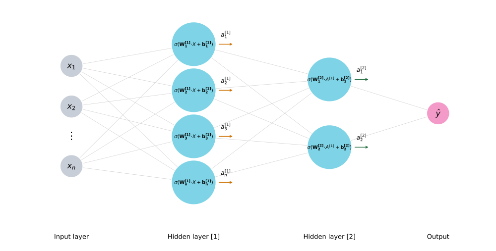
Vector Algebra
linear-algebra
So far you’ve been working with systems of equations and matrices, solving them by elimination, reducing them to row echelon form, and running Gaussian elimination. Now it’s time to zoom in on the objects that live inside those matrices: vectors. You will learn what vectors are, how to add and multiply them, how to measure their size and direction, and how to project one onto another.
In a way, vectors and matrices are a lot like numbers. Numbers can be added, multiplied, divided, and many of these operations carry over to vectors and matrices. You can add two vectors, take the product of two vectors, multiply a vector by a matrix, and even find the inverse of a matrix, under some conditions that you’ve actually seen before.
Why Vectors Matter in Machine Learning
Before diving into vector operations, let’s see how vectors and matrices appear in machine learning. Consider a dataset with \(m\) training examples and \(n\) features:
| Example | Feature \(x_1\) | Feature \(x_2\) | \(\cdots\) | Feature \(x_n\) | Output \(y\) |
|---|---|---|---|---|---|
| \((1)\) | \(x_1^{(1)}\) | \(x_2^{(1)}\) | \(\cdots\) | \(x_n^{(1)}\) | \(y^{(1)}\) |
| \((2)\) | \(x_1^{(2)}\) | \(x_2^{(2)}\) | \(\cdots\) | \(x_n^{(2)}\) | \(y^{(2)}\) |
| \(\vdots\) | \(\vdots\) | \(\vdots\) | \(\ddots\) | \(\vdots\) | \(\vdots\) |
| \((m)\) | \(x_1^{(m)}\) | \(x_2^{(m)}\) | \(\cdots\) | \(x_n^{(m)}\) | \(y^{(m)}\) |
The idea with linear regression is that you come up with a set of weights \(w_1, w_2, \ldots, w_n\), one for each feature, as well as a bias value \(b\), that allow you to characterize this dataset as a system of linear equations. For each training example \(i\):
\[w_1 x_1^{(i)} + w_2 x_2^{(i)} + \cdots + w_n x_n^{(i)} + b = y^{(i)}\]
To simplify, you can write \(W\) to denote the vector of weights and \(X\) to denote the matrix of feature values, and bundle everything into matrices and vectors:
\[W = \begin{bmatrix} w_1 & w_2 & \cdots & w_n \end{bmatrix}, \quad X = \begin{bmatrix} x_1^{(1)} & x_1^{(2)} & \cdots & x_1^{(m)} \\ x_2^{(1)} & x_2^{(2)} & \cdots & x_2^{(m)} \\ \vdots & \vdots & \ddots & \vdots \\ x_n^{(1)} & x_n^{(2)} & \cdots & x_n^{(m)} \end{bmatrix}, \quad \hat{y} = \begin{bmatrix} y^{(1)} & y^{(2)} & \cdots & y^{(m)} \end{bmatrix}\]
Multiplying \(W\) by each column of \(X\) and adding the bias gives the entire system in one compact expression:
\[W \cdot X + b = \hat{y}\]
Each column of \(X\) is a vector: one training example. The weights \(W\) form a vector. The predictions \(\hat{y}\) form a vector. Everything in that equation is a vector or a matrix operation on vectors.
Note
Notation reference:
- \(x_j^{(i)}\): feature \(j\) of training example \(i\)
- \(w_j\): the weight for feature \(j\)
- Capital letters (\(A\), \(B\), \(X\)): matrices. Lowercase bold (\(\mathbf{u}\), \(\mathbf{v}\), \(\mathbf{w}\)): vectors
- \(X \in \mathbb{R}^{n \times m}\): \(n\) rows (features), \(m\) columns (training examples)
- \(W\): weight row vector with \(n\) entries, one per feature
- \(b \in \mathbb{R}\): a single number (the bias)
- \(y^{(i)}\): the observed target for training example \(i\)
- \(\hat{y}\): the predicted output vector; \(\hat{y} = W \cdot X + b\)
From Linear Regression to Neural Networks (Optional)
Of course, real-world datasets are not typically systems you can solve analytically like you were doing in the previous notes. But the assumption that a dataset could be approximated as a system of linear equations turns out to be a reasonable one. Machine learning allows you to solve this system in an iterative fashion and make predictions of your target \(y\) for any new set of \(x\) values.
It turns out, however, that you can only get so far by approximating real-world datasets with linear models, because in many cases the relationship between features and targets is nonlinear. One of the most powerful models for representing nonlinear systems is the neural network. And one of the most amazing things about neural networks is that under the hood, they are really just a large collection of linear models.
You might have seen neural networks represented with vertically-oriented layers of so-called artificial neurons, all connected with lines:
The way to think about it is:
- The input layer on the left holds your features: \(x_1, x_2, \ldots, x_n\)
- All those \(x\) values get sent to each neuron in the next layer
- Each neuron has its own weight vector \(\mathbf{w}_i\) and bias \(b_i\), and computes \(\mathbf{w}_i \cdot \mathbf{x} + b_i\). That is a linear model, just like before, contained in one little neuron
- The result gets passed through an activation function \(\sigma\) to produce an output \(\mathbf{a}_i\)
- Each neuron in the layer does the same thing but with different weights and biases, producing its own output vector \(\mathbf{a}\)
To keep track of which layer you are in, you add a superscript in square brackets. So the weights, biases, and outputs in the first layer are \(W^{[1]}\), \(\mathbf{b}^{[1]}\), and \(\mathbf{a}^{[1]}\). Then what happens next is that you pass these \(\mathbf{a}^{[1]}\) values to the second layer and the process repeats. In the second layer, the inputs are the \(\mathbf{a}^{[1]}\) values from the first layer, and you multiply by a whole new set of weights \(W^{[2]}\), add a different bias \(\mathbf{b}^{[2]}\), and generate new outputs \(\mathbf{a}^{[2]}\).
This repeats as you propagate forward through each layer of the network: multiply the outputs of the previous layer by a set of weights, add a bias term, and apply an activation function, until you get to your final output.
The point here is not to worry about all the intricate details of how a neural network functions. The point is that there is nothing particularly fancy going on inside. It is really just a large collection of linear models that, taken together, can model highly nonlinear systems. Instead of writing down a zillion little linear equations, you represent the inputs and outputs of each layer as vectors and matrices, and apply linear algebra to operate on them. Understanding those operations is what this note is about.
What Is a Vector?
A vector \(\mathbf{v} \in \mathbb{R}^n\) is an ordered list of \(n\) real numbers:
\[\mathbf{v} = \begin{bmatrix} v_1 \\ v_2 \\ \vdots \\ v_n \end{bmatrix}\]
You can think of a vector in two ways:
- Geometrically: an arrow in space with a direction and a magnitude (length)
- Algebraically: a column of numbers
A scalar is just a single number. A vector is a 1D array of numbers. When you arrange numbers in a 2D grid of rows and columns, you get a matrix. Stack multiple matrices along a third dimension and you get a tensor. Tensors generalize to any number of dimensions; the cube below is just the 3D case we can draw:
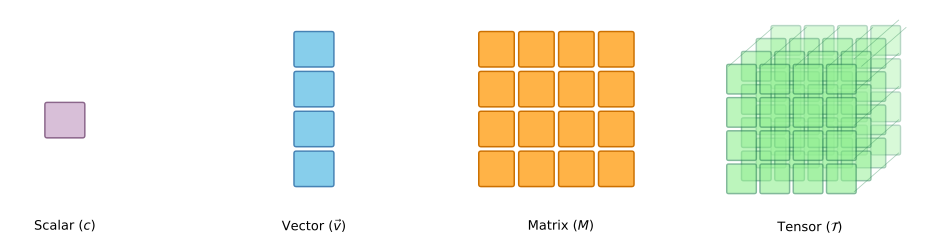
A vector is simply a tuple of numbers. It could be two numbers, three numbers, anything. The number of coordinates in the vector is the dimension of the space in which it lives. For example, the vector \((4, 3)\) lives in the plane and is the arrow that points at the point with horizontal coordinate 4 and vertical coordinate 3.
A vector in \(\mathbb{R}^2\) lives on a flat plane. A vector in \(\mathbb{R}^3\) lives in 3D space. For example, the vector \((4, 3, 1)\) is the arrow pointing at the point with coordinates \((4, 3, 1)\) with respect to the \(x\), \(y\), and \(z\) axes. A vector in \(\mathbb{R}^n\) lives in \(n\)-dimensional space. You can’t visualize it, but the math works the same way.
A vector has two important components: its magnitude (size, or length) and its direction.
Notation
There are many ways to write a vector. Vectors can be written horizontally as row vectors or vertically as column vectors:
\[\mathbf{x} = \begin{bmatrix} x_1 & x_2 & \cdots & x_n \end{bmatrix} \quad \text{or} \quad \mathbf{x} = \begin{bmatrix} x_1 \\ x_2 \\ \vdots \\ x_n \end{bmatrix}\]
The components are numbered with subscripts: the second component of \(\mathbf{x}\) is \(x_2\). In other resources, you may see vector names written with a little arrow (\(\vec{x}\)) or in bold (\(\mathbf{x}\)). Vectors can also be written with square brackets instead of parentheses:
\[\mathbf{x} = \begin{bmatrix} x_1 \\ x_2 \\ \vdots \\ x_n \end{bmatrix}\]
Square brackets can be a helpful reminder that a vector is part of a matrix, or is simply a small skinny matrix. There is no conceptual difference between these notations.
Norms: Measuring Length
The magnitude of a vector can be defined in several ways, but all of them emulate the distances you use in real life.
Imagine you live in a city with blocks formed by streets that are either horizontal or vertical. You need to go from home to the store, but you can only travel on the streets. If there are 4 blocks horizontally and 3 blocks vertically between your house and the store, the distance is \(4 + 3 = 7\). No matter what route you take, you always walk 7 blocks. This is called the taxicab distance.
The other option is to hop into a helicopter. The helicopter does not need to follow streets or corners; it flies directly. By the Pythagorean theorem, the shortest distance is \(\sqrt{4^2 + 3^2} = 5\).
Both of these give us ways to measure the size of a vector \((a, b)\):
- The \(L^1\) norm is the taxicab distance from the origin to \((a, b)\): the sum of the absolute values of the components. Absolute values because \(a\) and \(b\) can be negative, but the distance to walk is always positive:
\[\|\mathbf{v}\|_1 = |v_1| + |v_2| + \cdots + |v_n|\]
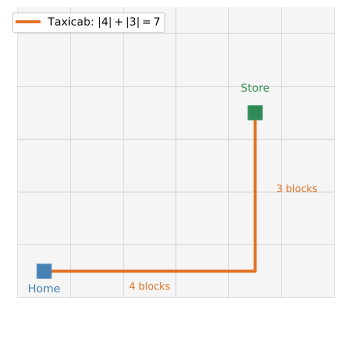
- The \(L^2\) norm (Euclidean norm) is the helicopter distance: the square root of the sum of the squares of the components:
\[\|\mathbf{v}\|_2 = \sqrt{v_1^2 + v_2^2 + \cdots + v_n^2}\]
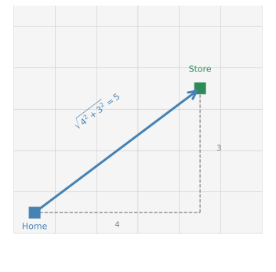
By default, when you don’t specify which norm to use, we mean the \(L^2\) norm, because it is the actual length of the arrow.
For example, the length of \(\begin{bmatrix} 3 \\ 4 \end{bmatrix}\) is \(\sqrt{9 + 16} = 5\). You might recognize this as the Pythagorean theorem, and that’s exactly what it is.
Direction
The direction of a vector can be deduced from its coordinates. For the vector \((4, 3)\), if the angle with the horizontal axis is \(\theta\), then \(\tan\theta = 3/4\), so \(\theta = \arctan(3/4) \approx 0.64\) radians, or about \(36.87°\).
Vectors can have different norms while pointing in the same direction. For example, \((2, 1.5)\) points in the same direction as \((4, 3)\) but has a smaller norm.
Unit Vectors
A unit vector is a vector with length 1. You can turn any non-zero vector into a unit vector by dividing by its norm:
\[\hat{\mathbf{v}} = \frac{\mathbf{v}}{\|\mathbf{v}\|}\]
This process is called normalization. The unit vector \(\hat{\mathbf{v}}\) points in the same direction as \(\mathbf{v}\) but has length 1.
Vector Operations
Just like numbers can be added and subtracted to obtain other numbers, vectors can also be added and subtracted to obtain other vectors. This can be done in a very natural way.
Addition
If you’d like to add two vectors, all you do is add the coordinates. For example, the vectors \(\mathbf{u} = \begin{bmatrix} 4 \\ 1 \end{bmatrix}\) and \(\mathbf{v} = \begin{bmatrix} 1 \\ 3 \end{bmatrix}\) add up to:
\[\mathbf{u} + \mathbf{v} = \begin{bmatrix} 4 + 1 \\ 1 + 3 \end{bmatrix} = \begin{bmatrix} 5 \\ 4 \end{bmatrix}\]
Geometrically, the sum vector is precisely the diagonal of the parallelogram formed by \(\mathbf{u}\) and \(\mathbf{v}\):
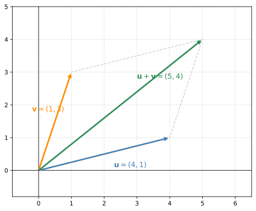
In general, for two \(n\)-dimensional vectors:
\[\mathbf{x} + \mathbf{y} = \begin{bmatrix} x_1 + y_1 \\ x_2 + y_2 \\ \vdots \\ x_n + y_n \end{bmatrix}\]
Notice that \(\mathbf{x}\) and \(\mathbf{y}\) must have the same number of components for this to make sense.
Subtraction
Something similar happens with subtraction, except you get the other diagonal of the parallelogram. The difference is also taken component-wise:
\[\mathbf{u} - \mathbf{v} = \begin{bmatrix} 4 - 1 \\ 1 - 3 \end{bmatrix} = \begin{bmatrix} 3 \\ -2 \end{bmatrix}\]
This vector might not look like anything special at first, but if you translate it so that its tail sits at the tip of \(\mathbf{v}\), it matches precisely with the arrow that joins the point \((1, 3)\) to the point \((4, 1)\):
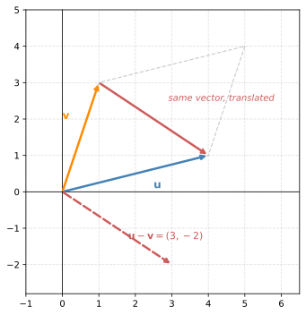
In general:
\[\mathbf{x} - \mathbf{y} = \begin{bmatrix} x_1 - y_1 \\ x_2 - y_2 \\ \vdots \\ x_n - y_n \end{bmatrix}\]
Distance Between Vectors
The difference between two vectors is helpful to tell how far apart they are from each other. For example, how different is the vector \((1, 5)\) from the vector \((6, 2)\)? Their difference is \((6 - 1, 2 - 5) = (5, -3)\).
One way to measure the distance is the \(L^1\) distance: the \(L^1\) norm of the difference, which is the sum of the absolute values of the components:
\[d_1 = |5| + |-3| = 8\]
Another way is the \(L^2\) distance: the \(L^2\) norm of the difference:
\[d_2 = \sqrt{5^2 + (-3)^2} = \sqrt{34} \approx 5.83\]
In machine learning, it is very useful to know distances between vectors because many times you want to calculate similarities between data points, and these measures are exactly what you need.
Scalar Multiplication
Another very useful and simple operation is multiplying a vector by a scalar. If the vector is \(\begin{bmatrix} 1 \\ 2 \end{bmatrix}\) and you’d like to multiply it by the scalar \(\lambda = 3\), then the result is the element-wise product:
\[3 \begin{bmatrix} 1 \\ 2 \end{bmatrix} = \begin{bmatrix} 3 \\ 6 \end{bmatrix}\]
Graphically, this means you stretch the vector by a factor of 3.
What if the scalar is negative? The vector gets stretched by the factor but also reflected about the origin. For example, if the scalar is \(-2\):
\[-2 \begin{bmatrix} 1 \\ 2 \end{bmatrix} = \begin{bmatrix} -2 \\ -4 \end{bmatrix}\]
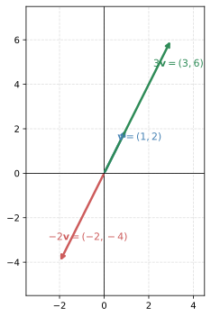
In general, for an \(n\)-dimensional vector \(\mathbf{x}\) and a scalar \(\lambda\):
\[\lambda \mathbf{x} = \begin{bmatrix} \lambda x_1 \\ \lambda x_2 \\ \vdots \\ \lambda x_n \end{bmatrix}\]
To summarize:
- If \(\lambda > 1\): the vector gets stretched
- If \(0 < \lambda < 1\): the vector gets shrunk
- If \(\lambda < 0\): the vector gets stretched and reflected about the origin
- If \(\lambda = 0\): the result is the zero vector
The Dot Product
You are now going to learn a very nice and compact way to combine two vectors into a single number. This operation is called the dot product, and it shows up everywhere in linear algebra and machine learning. In fact, you have already been doing dot products without knowing it. Every time you computed a weighted sum of features inside a neuron (\(w_1 x_1 + w_2 x_2 + \cdots\)), that was a dot product.
Here is how it works. Imagine you buy some fruit: 2 apples, 4 bananas, and 1 cherry. Each apple costs $3, each banana costs $5, and each cherry costs $2. How much does everything cost?
The amounts can be expressed as a vector, and so can the prices:
\[\mathbf{q} = \begin{bmatrix} 2 \\ 4 \\ 1 \end{bmatrix} \quad \text{(quantities)} \qquad \mathbf{p} = \begin{bmatrix} 3 \\ 5 \\ 2 \end{bmatrix} \quad \text{(prices)}\]
To find the total cost, you multiply each quantity by its price and add them up:
\[2 \times 3 + 4 \times 5 + 1 \times 2 = 6 + 20 + 2 = 28\]
That is the dot product of \(\mathbf{q}\) and \(\mathbf{p}\). You multiply corresponding entries and sum the results.
| Fruit | Quantity | Price | Cost | ||
|---|---|---|---|---|---|
| 2 | \(\times\) | $3 | \(=\) | $6 | |
| 4 | \(\times\) | $5 | \(=\) | $20 | |
| 1 | \(\times\) | $2 | \(=\) | $2 | |
| Total | $28 |
It is more common to write the first vector as a row and the second as a column:
\[\begin{bmatrix} 2 & 4 & 1 \end{bmatrix} \cdot \begin{bmatrix} 3 \\ 5 \\ 2 \end{bmatrix} = 2 \cdot 3 + 4 \cdot 5 + 1 \cdot 2 = 28\]
Formal Definition
Given two vectors \(\mathbf{x}\) and \(\mathbf{y}\) with the same number of components \(n\), the dot product is:
\[\mathbf{x} \cdot \mathbf{y} = x_1 y_1 + x_2 y_2 + \cdots + x_n y_n = \sum_{i=1}^{n} x_i y_i\]
You may also see the dot product written with angle brackets: \(\langle \mathbf{x}, \mathbf{y} \rangle\). Both notations mean the same thing.
Dot Product and the Norm
There is a nice connection between the dot product and the norm. Recall the vector \((4, 3)\) whose \(L^2\) norm was 5. Notice that \(4^2 + 3^2\) is actually the dot product of the vector with itself:
\[\begin{bmatrix} 4 \\ 3 \end{bmatrix} \cdot \begin{bmatrix} 4 \\ 3 \end{bmatrix} = 4 \cdot 4 + 3 \cdot 3 = 16 + 9 = 25\]
This is always the case. The norm (length) of a vector is the square root of the dot product of the vector with itself:
\[\|\mathbf{v}\| = \sqrt{\mathbf{v} \cdot \mathbf{v}}\]
The double vertical lines \(\|\mathbf{v}\|\) are read as “the \(L^2\) norm of \(\mathbf{v}\)” and simply mean the length of the vector.
Vector Transpose
In the dot product above, you saw the first vector written as a row and the second as a column. The operation that converts a column vector into a row vector (and vice versa) is called the transpose, denoted by a superscript \(T\):
\[\mathbf{x} = \begin{bmatrix} x_1 \\ x_2 \\ x_3 \end{bmatrix} \quad \Rightarrow \quad \mathbf{x}^T = \begin{bmatrix} x_1 & x_2 & x_3 \end{bmatrix}\]
Applying the transpose to a row vector turns it back into a column vector. The transpose simply turns columns into rows.
You can also transpose a matrix. If you start with a \(3 \times 2\) matrix, transpose each column into a row:
\[A = \begin{bmatrix} 1 & 4 \\ 2 & 5 \\ 3 & 6 \end{bmatrix} \quad \Rightarrow \quad A^T = \begin{bmatrix} 1 & 2 & 3 \\ 4 & 5 & 6 \end{bmatrix}\]
Notice that the dimensions swap: a \(3 \times 2\) matrix becomes a \(2 \times 3\) matrix.
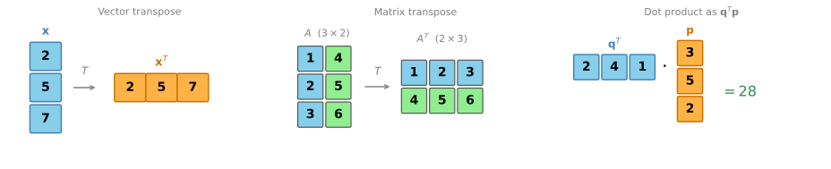
Using the transpose, the dot product can be written as a row vector times a column vector:
\[\mathbf{x} \cdot \mathbf{y} = \mathbf{x}^T \mathbf{y}\]
This notation is very common and you will see it throughout linear algebra and machine learning.
Geometric Interpretation
The dot product has a deep geometric meaning. Let’s build up to it step by step.
Orthogonal Vectors
Take a look at these two perpendicular (also called orthogonal) vectors: \(\mathbf{u} = \begin{bmatrix} -1 \\ 3 \end{bmatrix}\) and \(\mathbf{v} = \begin{bmatrix} 6 \\ 2 \end{bmatrix}\). Now take the dot product:
\[\mathbf{u} \cdot \mathbf{v} = (-1)(6) + (3)(2) = -6 + 6 = 0\]
This always happens. Two vectors are orthogonal if and only if their dot product is zero.
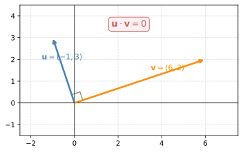
Building Up to the Formula
Let’s recap what you’ve seen so far:
- The dot product of a vector with itself is the norm squared: \(\mathbf{v} \cdot \mathbf{v} = \|\mathbf{v}\|^2\)
- The dot product of two orthogonal vectors is always 0
What about the dot product between two arbitrary vectors \(\mathbf{u}\) and \(\mathbf{v}\)?
If \(\mathbf{u}\) and \(\mathbf{v}\) point in the same direction, the dot product is simply the product of their norms: \(\mathbf{u} \cdot \mathbf{v} = \|\mathbf{u}\| \, \|\mathbf{v}\|\).
But what if there is an angle between them? Then you need to project one vector onto the other. The projection of \(\mathbf{u}\) onto \(\mathbf{v}\) is the “shadow” that \(\mathbf{u}\) casts on \(\mathbf{v}\). Call this projection \(\mathbf{u}'\). Then:
\[\mathbf{u} \cdot \mathbf{v} = \|\mathbf{u}'\| \, \|\mathbf{v}\|\]
For example, take \(\mathbf{u} = (1, 3)\) and \(\mathbf{v} = (6, 2)\). Their dot product is \(1 \cdot 6 + 3 \cdot 2 = 12\).
On the left, we project \(\mathbf{u}\) onto \(\mathbf{v}\). The shadow \(\mathbf{u}'\) lands on the line of \(\mathbf{v}\) and is much shorter than \(\mathbf{v}\). The dot product is \(\|\mathbf{u}'\| \times \|\mathbf{v}\| = 12\).
On the right, we project \(\mathbf{v}\) onto \(\mathbf{u}\). Now \(\mathbf{v}\) is long, so its shadow \(\mathbf{v}'\) actually extends past the tip of \(\mathbf{u}\). Notice the dashed extension of \(\mathbf{u}\)’s line so the perpendicular can land. The dot product is \(\|\mathbf{u}\| \times \|\mathbf{v}'\| = 12\). Same answer.
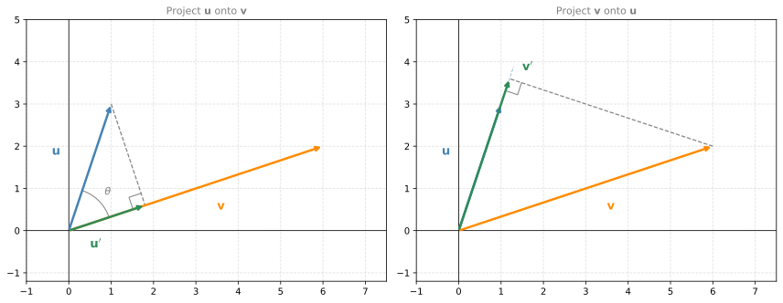
Both give the same dot product of 12, but the decomposition is different. On the left, you get a short shadow times a long vector. On the right, you get a long shadow times a short vector. It’s like \(2 \times 6 = 4 \times 3\): different ways to break down the same number.
The shadow lengths are not the point. The point is why this works. The length of the shadow that \(\mathbf{u}\) casts on \(\mathbf{v}\) is \(\|\mathbf{u}\| \cos\theta\), where \(\theta\) is the angle between the two vectors. So the dot product becomes:
\[\mathbf{u} \cdot \mathbf{v} = \underbrace{\|\mathbf{u}\| \cos\theta}_{\text{shadow length}} \times \|\mathbf{v}\| = \|\mathbf{u}\| \, \|\mathbf{v}\| \cos\theta\]
What really matters is the sign. If the shadow falls in the same direction as the vector you’re projecting onto, the dot product is positive. If the shadow falls in the opposite direction (angle greater than 90°), the dot product is negative. If the vectors are perpendicular, the shadow has zero length and the dot product is zero.
Sign of the Dot Product
Using what you now know, you can tell whether the dot product between two vectors is positive, negative, or zero. Take the vector \(\mathbf{v} = (6, 2)\):
- A vector perpendicular to it, such as \((-1, 3)\), has a dot product of zero
- A vector on the same side (angle less than 90°), such as \((2, 4)\), has a positive dot product: \(6 \cdot 2 + 2 \cdot 4 = 20\)
- A vector on the opposite side (angle greater than 90°), such as \((-4, 1)\), has a negative dot product: \(6 \cdot (-4) + 2 \cdot 1 = -22\)
Why is the dot product with \((2, 4)\) positive? Because its projection onto \((6, 2)\) has positive length. Why is the dot product with \((-4, 1)\) negative? Because its projection onto \((6, 2)\) goes in the opposite direction, giving a negative length.
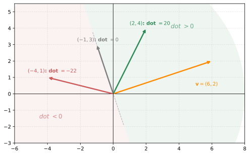
In general, for any vector \(\mathbf{u}\):
- The vectors with dot product zero are all the vectors perpendicular to \(\mathbf{u}\)
- The vectors with positive dot product are on the same side as \(\mathbf{u}\) (angle less than 90°)
- The vectors with negative dot product are on the opposite side (angle greater than 90°)
Remember the neuron from the neural network section? It computes \(\mathbf{w} \cdot \mathbf{x} + b\). That is a dot product of the weight vector and the input vector, plus a bias. The dot product is the fundamental building block of every layer in a neural network.
Matrix-Vector Multiplication
You now know how to take the dot product of two vectors. It turns out that multiplying a matrix by a vector is nothing more than stacking several dot products together. In fact, this is something you have already seen: it is precisely how a system of linear equations looks.
From Equations to Dot Products
Recall that an equation like \(2a + 4b + c = 28\) can be written as a dot product of a row vector of coefficients and a column vector of unknowns:
\[\begin{bmatrix} 2 & 4 & 1 \end{bmatrix} \cdot \begin{bmatrix} a \\ b \\ c \end{bmatrix} = 28\]
Now imagine you have a system of three equations:
\[\begin{cases} a + b + c = 10 \\ a + 2b + c = 15 \\ a + b + 2c = 12 \end{cases}\]
Each equation can be expressed as its own dot product:
\[\begin{bmatrix} 1 & 1 & 1 \end{bmatrix} \cdot \begin{bmatrix} a \\ b \\ c \end{bmatrix} = 10 \qquad \begin{bmatrix} 1 & 2 & 1 \end{bmatrix} \cdot \begin{bmatrix} a \\ b \\ c \end{bmatrix} = 15 \qquad \begin{bmatrix} 1 & 1 & 2 \end{bmatrix} \cdot \begin{bmatrix} a \\ b \\ c \end{bmatrix} = 12\]
Stacking Dot Products into a Matrix
Writing three separate dot products is clumsy. Notice that the column vector \(\begin{bmatrix} a \\ b \\ c \end{bmatrix}\) is the same in all three. So you can stack the three row vectors into a matrix and write the entire system as a single matrix-vector product:
\[\begin{bmatrix} 1 & 1 & 1 \\ 1 & 2 & 1 \\ 1 & 1 & 2 \end{bmatrix} \begin{bmatrix} a \\ b \\ c \end{bmatrix} = \begin{bmatrix} 10 \\ 15 \\ 12 \end{bmatrix}\]
The product of a matrix and a vector is nothing more than dot products stacked together. Each row of the matrix gets dotted with the vector to produce one entry in the result:
\[A\mathbf{x} = \begin{bmatrix} \text{row}_1 \cdot \mathbf{x} \\ \text{row}_2 \cdot \mathbf{x} \\ \vdots \\ \text{row}_m \cdot \mathbf{x} \end{bmatrix}\]
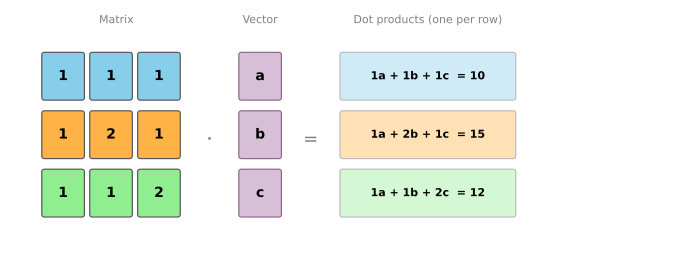
Dimension Requirements
For this multiplication to work, the number of columns in the matrix must equal the length of the vector. If they don’t match, you are trying to take the dot product of vectors with different lengths, which is undefined.
If the matrix is \(m \times n\) (meaning \(m\) rows and \(n\) columns) and the vector has \(n\) entries, the result is a vector with \(m\) entries:
\[\underbrace{A}_{m \times n} \; \underbrace{\mathbf{x}}_{n \times 1} = \underbrace{\mathbf{b}}_{m \times 1}\]
The matrix does not have to be square. You could have a \(4 \times 3\) matrix (four equations, three unknowns) multiplied by a vector of length 3, and the result would be a vector of length 4. The only rule is that the inner dimensions must match.
For example:
\[\begin{bmatrix} 2 & 1 \\ 0 & 3 \\ -1 & 4 \end{bmatrix} \begin{bmatrix} 5 \\ 2 \end{bmatrix} = \begin{bmatrix} 2 \cdot 5 + 1 \cdot 2 \\ 0 \cdot 5 + 3 \cdot 2 \\ -1 \cdot 5 + 4 \cdot 2 \end{bmatrix} = \begin{bmatrix} 12 \\ 6 \\ 3 \end{bmatrix}\]
A \(3 \times 2\) matrix times a vector of length 2 gives a vector of length 3.
Lab: Vector Operations with NumPy
Let’s verify the concepts from this note with code.
import numpy as npVectors, Addition, and Scalar Multiplication
u = np.array([1, 3])
v = np.array([4, -1])
print("u + v =", u + v)
print("u - v =", u - v)
print("3 * u =", 3 * u)u + v = [5 2]
u - v = [-3 4]
3 * u = [3 9]Norm and Unit Vector
w = np.array([3, 4])
print(f"||w|| = {np.linalg.norm(w)}")
print("Unit vector:", w / np.linalg.norm(w))||w|| = 5.0
Unit vector: [0.6 0.8]Distance Between Vectors
a = np.array([1, 5])
b = np.array([6, 2])
diff = b - a
print("L1 distance:", np.sum(np.abs(diff)))
print("L2 distance:", np.linalg.norm(diff))L1 distance: 8
L2 distance: 5.830951894845301Dot Product
NumPy gives you three ways to compute the dot product: np.dot, the @ operator, and manual sum. All produce the same result:
x = np.array([2, 4, 1])
y = np.array([3, 5, 2])
print("np.dot:", np.dot(x, y))
print("@: ", x @ y)
print("manual:", np.sum(x * y))np.dot: 28
@: 28
manual: 28Angle Between Vectors
Using \(\cos\theta = \frac{\mathbf{u} \cdot \mathbf{v}}{\|\mathbf{u}\| \, \|\mathbf{v}\|}\):
u = np.array([1, 3])
v = np.array([6, 2])
cos_theta = np.dot(u, v) / (np.linalg.norm(u) * np.linalg.norm(v))
theta = np.arccos(np.clip(cos_theta, -1, 1))
print(f"Angle: {np.degrees(theta):.2f} degrees")Angle: 53.13 degreesOrthogonal vectors have a dot product of zero:
u = np.array([-1, 3])
v = np.array([6, 2])
print(f"Dot product: {np.dot(u, v)} (orthogonal!)")Dot product: 0 (orthogonal!)Matrix-Vector Multiplication
A = np.array([[1, 1, 1],
[1, 2, 1],
[1, 1, 2]])
x = np.array([3, 5, 2])
print("A @ x =", A @ x)A @ x = [10 15 12]Each entry in the result is a dot product of a row of \(A\) with \(\mathbf{x}\). This is exactly how np.linalg.solve works under the hood when you solve \(A\mathbf{x} = \mathbf{b}\).
Vectorized vs. Loop Speed
In machine learning you work with vectors of thousands or millions of entries. NumPy’s vectorized operations are dramatically faster than Python loops:
import time
a = np.random.rand(1_000_000)
b = np.random.rand(1_000_000)
# Loop version
tic = time.time()
s = 0
for ai, bi in zip(a, b):
s += ai * bi
loop_ms = 1000 * (time.time() - tic)
# Vectorized version
tic = time.time()
s = np.dot(a, b)
vec_ms = 1000 * (time.time() - tic)
print(f"Loop: {loop_ms:.1f} ms")
print(f"Vectorized: {vec_ms:.2f} ms")
print(f"Speedup: {loop_ms / vec_ms:.0f}x")Loop: 87.6 ms
Vectorized: 0.42 ms
Speedup: 206xThis is why NumPy (and libraries built on it like TensorFlow and PyTorch) use vectorized operations for everything.
Next: Linear Transformations